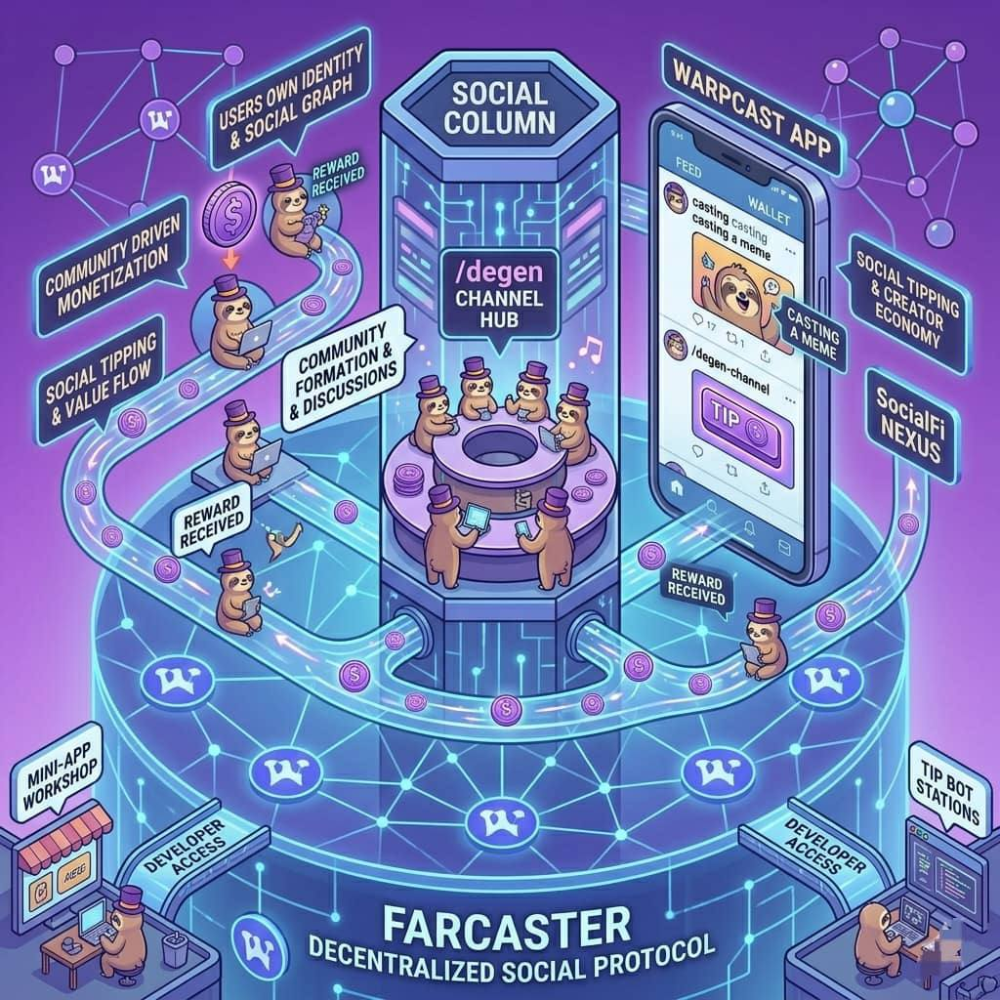

Farcaster & Warpcast Integration
How decentralized social protocols anchor the Degen ecosystem.
The growth of Degen (DEGEN) is closely connected to a decentralized social network called Farcaster and its most popular app Warpcast.
These platforms provide the social environment where the Degen community lives, interacts, and rewards creators.
To understand why this integration matters, we need to understand how Farcaster and Warpcast work.
Farcaster is a decentralized social media protocol.
A protocol is like the foundation or system that different apps can use to communicate.
Unlike traditional social networks such as Twitter or Facebook, Farcaster is designed so that:
- users own their identity
- developers can build different apps on the same network
- communities can exist without being controlled by a single company
This creates a more open and community driven internet.
Warpcast is the main app people use to access Farcaster.
It works like a social media app where users can:
- post messages (called casts)
- follow other users
- join topic channels
- interact with posts
Because Warpcast is built on Farcaster, users keep their identity and social graph, even if they move to another Farcaster app.
This makes the ecosystem more flexible and decentralized.
The Degen movement began inside a Farcaster channel called "/degen."
This channel became a hub where users discussed:
- crypto trading
- memes
- new ideas
- community experiments
People in the channel started rewarding each other for great posts.
This is how the idea for $DEGEN tipping was born.
Over time, the /degen channel grew into one of the most active communities in Farcaster.
Farcaster made it easy for developers to create tools that allow crypto tipping inside social conversations.
With these tools:
- users could reward creators instantly
- tips could be sent directly from wallets
- creators could earn tokens for their contributions
Because these interactions happened inside a social network, it created a new type of online economy.
Instead of platforms paying creators, the community rewarded creators directly.
Traditional social networks are controlled by companies.
These companies:
- control algorithms
- control monetization
- decide which content is promoted
In decentralized networks like Farcaster:
- users have more control
- developers can create new features freely
- communities can experiment with new economic models
This environment made it possible for projects like DEGEN to grow organically from the community.
Because Farcaster is open, developers can build tools that connect directly to the network.
These tools include:
- tipping bots
- dashboards
- mini-apps
- social analytics tools
Many of these tools support the DEGEN ecosystem, helping users reward creators or track activity.
This creates a growing ecosystem of apps around the Degen community.
The integration between DEGEN and Farcaster represents a new concept called SocialFi.
SocialFi combines:
- social media
- crypto tokens
- community incentives
In this system:
- creators earn directly from their audience
- communities reward valuable contributions
- users become participants in the ecosystem
Instead of social media companies capturing most of the value, the value flows back to the community.
